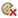

Czyszczenie i włączanie plików cookie w Chrome oraz zarządzanie nimi
Domyślnie wszystkie pliki cookie są dozwolone, ale możesz zmodyfikować to ustawienie i wyczyścić pliki cookie wszystkich witryn lub konkretnych stron.
Co to są pliki cookie
Pliki cookie to pliki tworzone przez odwiedzane strony. Zawierają informacje dotyczące przeglądania, na przykład ustawienia witryny czy dane profilu. Pliki cookie dzielą się na dwa rodzaje:
- Własne pliki cookie – ustawiane przez stronę widoczną na pasku adresu.
- Pliki cookie innych firm – pochodzą z innych witryn, które są źródłem elementów, np. reklam czy obrazów, umieszczonych na odwiedzanej stronie.
Nie wszystkie pliki cookie są złe. Pozwalają one na przykład witrynie zapamiętywać preferowane ustawienia i automatycznie je stosować przy kolejnych odwiedzinach. Pomagają też witrynie zapamiętywać Twoją lokalizację, dzięki czemu może ona wyświetlać treści dotyczące danego miejsca, na przykład prognozę pogody.
Usuwanie konkretnych lub wszystkich plików cookie
Możesz usunąć z urządzeń dane i informacje zawarte we własnych plikach cookie i plikach cookie innych firm. Jeśli usuniesz pliki cookie, możesz stracić na przykład zapisane ustawienia dotyczące witryn.
- Otwórz Google Chrome na komputerze.
- W prawym górnym rogu kliknij Więcej
Ustawienia.
- U dołu strony kliknij Pokaż ustawienia zaawansowane.
- W sekcji „Prywatność” kliknij Ustawienia treści.
- W sekcji „Pliki cookie” kliknij Wszystkie pliki cookie i dane witryn.
- Aby usunąć wszystkie pliki cookie, kliknij Usuń wszystkie.
- Aby usunąć określony plik cookie, najedź wskaźnikiem myszy na witrynę. Po prawej stronie kliknij Zamknij .
- Możesz też usunąć wszystkie pliki cookie utworzone w określonym przedziale czasu.
Zezwalanie na pliki cookie i blokowanie ich
Zapisywanie plików cookie przez strony internetowe możesz włączyć lub wyłączyć.
- Otwórz Google Chrome na komputerze.
- W prawym górnym rogu kliknij Więcej
- U dołu strony kliknij Pokaż ustawienia zaawansowane.
- W sekcji „Prywatność” kliknij Ustawienia treści.
- Zmień ustawienia w sekcji „Pliki cookie”.
- Aby zezwolić zarówno na własne pliki cookie, jak i na pliki cookie innych firm, kliknij Zezwalaj na przechowywanie danych lokalnie.
- Aby zablokować wszystkie pliki cookie, kliknij Blokuj próby umieszczenia na komputerze danych z witryn. Gdy to zrobisz, większość witryn wymagających logowania nie będzie działać.
- Aby zezwolić tylko na własne pliki cookie i zablokować wszystkie pliki cookie innych firm, zaznacz „Blokuj pliki cookie i dane z witryn innych firm”. To ustawienie oznacza, że dane witryn nie mogą być zapisywane ani odczytywane, nawet jeśli dodasz witrynę do listy wyjątków i zezwolisz na jej pliki cookie.
Sprawdzanie, czy ustawienia zostały zapisane
Jeśli otworzysz jakąś stronę i jej plik cookie zostanie zablokowany, zobaczysz na pasku adresu ikonę zablokowanego pliku cookie .
Zarządzanie innymi danymi i informacjami w plikach cookie
Jeśli używasz Chrome na komputerze, możesz kontrolować informacje w plikach cookie. Dowiedz się, jak zarządzać ustawieniami.
W Chrome możesz ustawić przechowywanie informacji, w tym własnych plików cookie i plików cookie innych firm, na czas przeglądania. Zostaną one usunięte po zamknięciu przeglądarki.
- Otwórz Google Chrome na komputerze.
- W prawym górnym rogu kliknij Więcej
- U dołu strony kliknij Pokaż ustawienia zaawansowane.
- W sekcji „Prywatność” kliknij Ustawienia treści.
- W sekcji „Pliki cookie” zaznacz Zachowuj dane lokalne tylko do zamknięcia przeglądarki.
Niektórych plików cookie i danych witryn powiązanych z aplikacjami dodanymi do Chrome z Chrome Web Store nie możesz usunąć. Dowiedz się, jak czyścić dane udostępnianych aplikacji przez wyczyszczenie pamięci podręcznej i innych danych przeglądarki.
Możesz zablokować większość plików cookie i zezwolić na ich zapisywanie tylko w przypadku określonych witryn:
- Otwórz Google Chrome na komputerze.
- W prawym górnym rogu kliknij Więcej
- U dołu strony kliknij Pokaż ustawienia zaawansowane.
- W sekcji „Prywatność” kliknij Ustawienia treści.
- W sekcji „Pliki cookie” kliknij Zarządzaj wyjątkami.
- Wpisz nazwę witryny, na której pliki cookie chcesz zezwolić.
- Aby zezwolić na pliki cookie z całej domeny, wstaw
[*.]przed jej nazwą. Na przykład[*.]google.com. Zostanie wtedy utworzony wyjątek obejmujący strony drive.google.com i calendar.google.com. - Możesz też podać adres IP lub adres internetowy, który nie zaczyna się od
http.
- Aby zezwolić na pliki cookie z całej domeny, wstaw
- Po prawej stronie nazwy witryny kliknij strzałkę w dół .
- Określ, czy witryna może zapisywać pliki cookie. Jeśli wybierzesz Wyczyść przy zamykaniu, pliki cookie będą usuwane po zamknięciu przeglądarki.
W tym polu możesz też edytować i usuwać wyjątki.
- Otwórz Google Chrome na komputerze.
- W prawym górnym rogu kliknij Więcej
- U dołu strony kliknij Pokaż ustawienia zaawansowane.
- W sekcji „Prywatność” kliknij Ustawienia treści.
- W sekcji „Pliki cookie” kliknij Zarządzaj wyjątkami.
- Wskaż witrynę lub domenę.
- Po prawej stronie kliknij Zamknij .
- Kliknij Gotowe.
Jeśli korzystasz z Chromebooka w pracy lub szkole, administrator sieci mógł już skonfigurować ustawienia plików cookie. W takim przypadku nie możesz ich zmienić. Dowiedz się więcej o korzystaniu z zarządzanego Chromebooka.
Jeśli masz dodane wyjątki dotyczące plików cookie z określonych domen, na pasku adresu zobaczysz, czy są one blokowane .
Możesz zmodyfikować uprawnienia plików cookie ze strony, którą aktualnie przeglądasz.
- Otwórz Chrome na komputerze.
- Otwórz stronę, której plikami cookie chcesz zarządzać.
- U góry obok adresu internetowego kliknij kłódkę lub stronę .
- Kliknij [liczba] z tej witryny.
- Dostosuj ustawienia plików cookie:
- Ponowne zablokowanie dozwolonych plików cookie: na karcie „Dopuszczone” wybierz stronę z listy u góry i kliknij Blokuj.
- Dopuszczenie plików cookie z tej domeny: na karcie „Zablokowane” wybierz stronę z listy u góry i kliknij Zezwalaj.
- Dopuszczenie plików cookie z tej domeny do zamknięcia Chrome: na karcie „Zablokowane” wybierz stronę z listy u góry i kliknij Wyczyść przy zamykaniu. Pliki cookie będą usuwane, gdy zamkniesz przeglądarkę.
Aby zmiany zostały wprowadzone, konieczne może być ponowne załadowanie strony. Nawet jeśli zezwalasz na pliki cookie ze strony, związane z nią pliki cookie innych firm nie są akceptowane, jeśli masz zaznaczone pole „Zablokuj pliki cookie i dane z witryn innych firm”.
Podobne artykuły
Megan jest specjalistką od Google Chrome i autorką tej strony Centrum pomocy. Pomóż jej ulepszyć ten artykuł, dodając swoją opinię poniżej.